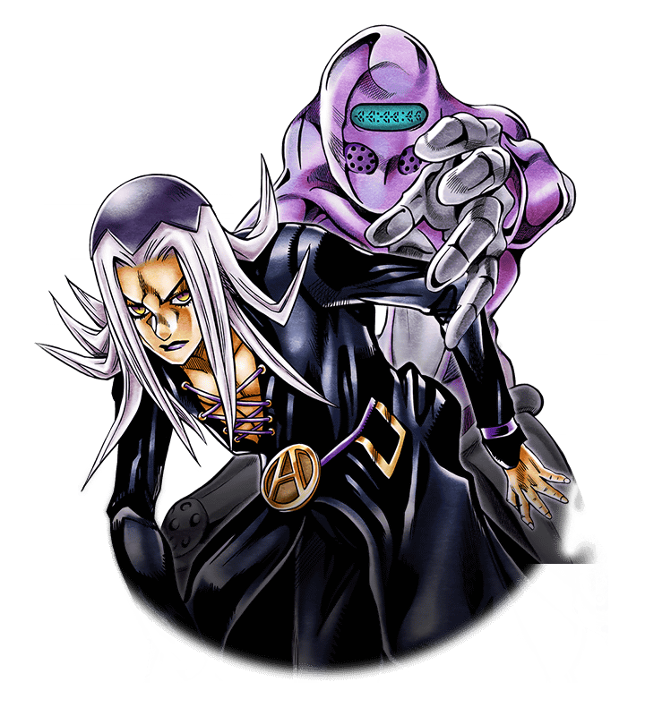

Leone Abbacchio
Abbacchio’s a former cop with a serious grudge and a no-nonsense attitude. His Stand, Moody Blues, can replay past events like a living tape recorder. He’s quiet but always watching out for the team.

Abbacchio’s a former cop with a serious grudge and a no-nonsense attitude. His Stand, Moody Blues, can replay past events like a living tape recorder. He’s quiet but always watching out for the team.
